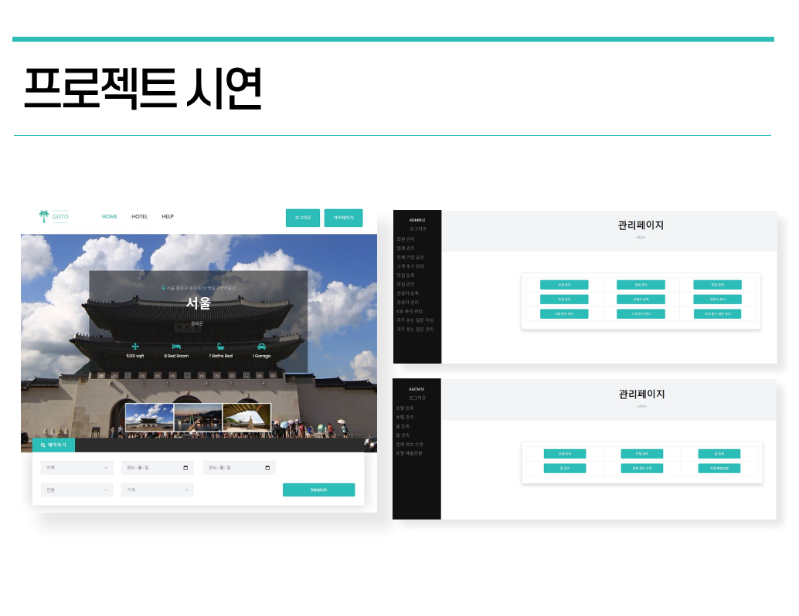
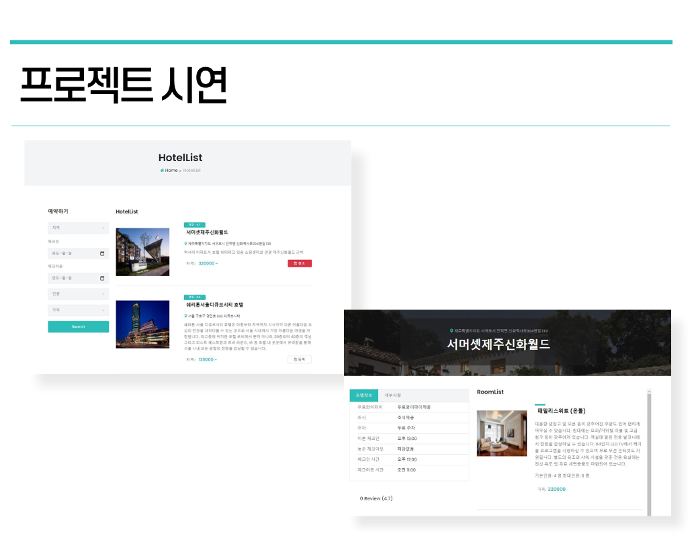
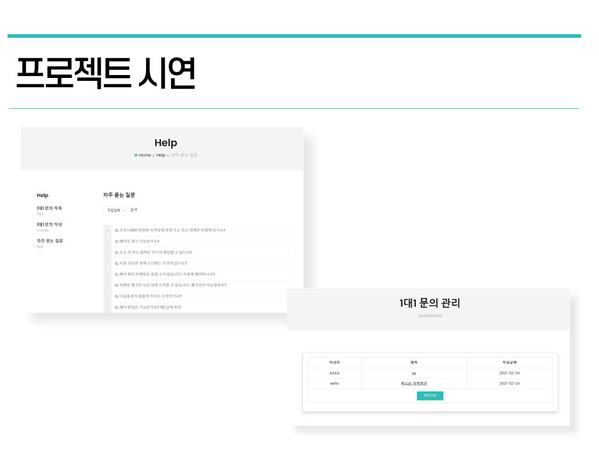
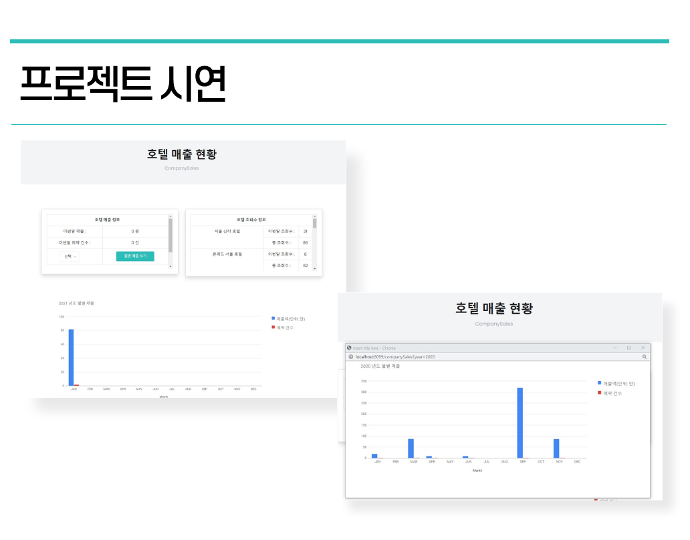

This is the GOTO Project




Project information
- Category: Web design & Programing
- Project date: 2020.12.21 - 2021.02.05
- Project URL: https://github.com/BoBaeSeo/GOTO_Project
프로젝트 소개
숙박 사이트 서비스에서 숙박 관련 정보 뿐만 아니라 그 이외에 여행에 필요한 먹거리나 랜드마크 등에 대한 정보를 제공하는 사이트 제작
주요역할 및 담당
공통역할 :
1. 각각 생각해온 아이디어로 진행된 회의를 통해 프로젝트 기획 및 총괄
2. 총괄 후 데이터베이스 정의, 설계 및 구현
3. 프로젝트 시작하기 전 개개인의 역량에 맞춰 역할을 분배
4. bootstrap을 사용하여 그 틀에 맞춰 코딩을 시작함
5. 데이터베이스에 필요한 자료를 다 함께 수집하여 방대한 데이터를 수집함
6. 화면 흐름도 설계
주요역할 :
메인 엔지니어 : 모든 페이지 총괄 담당
- 팀원들의 작업 현황 조사 & 현황에 따라 추가 작업, 스케줄 조정
- 모든 프로젝트 관련 데이터베이스, 코드 보관, 관리, 수정
- 팀원들이 작성한 코드, 수정한 코드 합치는 작업
- 모든 페이지 오류 코드 검출, 수정 & 추가 코드 수정 작업
- 팀원들이 코딩하기 어려워 하는 부분 코드 제작 도움
- 맡은 페이지 코딩 작업
1. 메인 페이지(index.jsp) 호텔 검색 기능
- 고객이 원하는 조건에 맞춰서 호텔을 검색할 수 있음 3개의 테이블 조인과 서브쿼리문을 이용하여 쿼리문 작성
- 체크인과 체크아웃은 검색 조건에 무조건 들어가게 자바스크립트를 이용. 만약 체크인과 체크아웃이 존재하지 않는다면 alert를 이용하여 다시 작성하도록 경고문을 띄움.
- 지역, 인원, 가격은 고객이 원한다면 조건으로 선택, 원하지 않는다면 조건으로 선택되지 않음. Mybatis 동적 쿼리문을 이용하여 조건들을 판별하여 조건들이 존재하면 where문으로 들어가고 존재하지 않으면 사라짐.
- 만약 다른 고객이 이미 그 호텔의 방을 예약 했을 경우를 고려하여 쿼리문 where 내에 서브쿼리문을 작성하여 예약 테이블에서 고객이 선택한 날짜에 select 되는 room 코드와 겹치는 room이 있을 경우에는 select되지 않도록 함.
2. 고객 호텔 리스트 페이지 제작
- 호텔 리스트 페이지에는 왼쪽 사이드바에 메인페이지 검색과 동일하게 검색을 할 수 있는 공간을 만듦.
- 검색을 하여 넘어오는 경우에는 input태그에 검색 값이 뜨도록 제작.
- 페이징 처리를 통해 한 페이지에 리스트는 5개까지만 출력되도록 하였고, 아래의 페이지 버튼을 누르면 다음 페이지로 넘어갈 수 있게 만듦.
- c:if 태그를 이용하여 검색을 해서 호텔리스트로 넘어오는 경우, 헤더에 HOTEL 버튼을 클릭하여 넘어오는 경우를 고려하여 페이징 처리를 다르게 처리.
- c:if 태그를 이용하여 로그인을 판별하여 로그인이 되어있을 경우에 호텔 찜 등록 버튼이 뜨도록 제작.
- 호텔 리스트에서 호텔 이름을 눌러 룸 리스트로 넘어가는 경우 ajax를 이용하여 호텔 조회수가 1 증가.
3. 호텔 찜 등록 기능
- 로그인 시에만 호텔 찜 등록이 가능하도록 하였고, 찜 등록 버튼을 누르면 heart 테이블에 찜 등록 기록이 남고 버튼은 찜 취소로 변경.
- 찜 취소 버튼을 누르면 heart 테이블에 찜 등록 기록이 삭제되고 버튼은 찜 등록 버튼으로 변경.
4. 고객 룸 리스트 페이지 제작
- 룸 리스트 페이지에는 호텔 관련 정보와 방 정보, 리뷰 정보, 호텔 위치가 뜨도록 작업.
- 지도는 카카오 지도 api를 사용하였고, api를 이용하여 호텔의 주소에 맞게 지도가 뜰 수 있도록 작업.
지도내에는 마커를 이용하여 호텔 이름을 표시하였고, api를 이용하여 호텔의 주소를 위도, 경도로 나타내어 큰지도보기, 길찾기 등의 기능을 추가.
- 룸 리스트 왼쪽 사이드엔 호텔을 이용했던 고객들이 남긴 리뷰를 볼 수 있도록 작업.
- 작성자, 작성날짜, 작성 내용, 평점이 표시 되며, c:if 태그를 이용하여 로그인을 했을 경우에는 리뷰 좋아요, 수정, 삭제를 할 수 있도록 작업, c:when 태그를 이용하여 자신이 작성한 리뷰일때는 좋아요 버튼 대신 수정, 삭제가 뜰 수 있도록 작업.
5. 리뷰 좋아요 기능
- 로그인 시에만 리뷰 좋아요를 할 수 있도록 작업, like 버튼을 누르면 history에 로그인 아이디와 좋아요 기록이 남고, 버튼은 unlike로 변경. unlike 버튼을 누르면 history에 기록이 삭제 되고 버튼은 like로 변경.
- 리뷰는 한 리뷰당 한 아이디만 좋아요가 가능하도록 작업, 모든 좋아요 개수를 합산하여 가장 위에 좋아요를 몇 개 받았는지 뜰 수 있도록 작업.
6. 내가 예약한 목록 페이지 제작
- 내가 예약한 목록 페이지에는 호텔정보, 방 정보, 예약자 정보, 예약 정보가 뜰 수 있도록 작업.
- 리뷰는 페이지 당 5개까지 볼 수 있으며 5개 이상일 경우 페이징 처리를 통해 다음 페이지로 넘어가서 볼 수 있도록 작성.
- 현재 시간과 체크인 시간을 비교하여 체크인 시간이 현재 시간보다 미래일 경우 예약 취소 버튼이 뜨고, 체크인 시간이 현재 시간보다 과거일 경우 이용 완료 표시가 뜨도록 작업.
- 예약 취소 버튼을 누를 경우 비밀번호를 확인한 뒤 예약을 취소할 수 있도록 ajax를 이용하여 작업.
- 이용 완료가 됐을 경우에는 숙소에 대한 리뷰를 작성할 수 있도록 리뷰 작성 버튼이 뜰 수 있게 작업했고, 리뷰 작성 버튼을 누를 경우 리뷰를 작성 할 수 있는 새로운 윈도우 창이 열림.
- 리뷰는 한 예약당 한 번만 가능하도록, 예약내역에 연결된 리뷰가 있다면 이용완료여도 리뷰 작성 버튼이 뜨지 않도록 작업.
7. 회원, 업체 로그인 기능, 로그인 api 사용
- 회원 로그인은 고객이 아이디와 비밀번호를 작성하면 두개가 일치하는지 확인하여 일치하면 session에 값을 담고 일치하지 않으면 alert를 이용하여 경고문을 띄움.
- 카카오 api를 이용하여 카카오계정을 이용해 로그인을 할 수 있도록 작업.
- 먼저 api로 카카오 로그인을 하게 되면 카카오 고유 id와 닉네임, 이메일을 받아온다. 그 뒤 카카오 id로 AJAX를 이용해 데이터베이스를 조회해 값이 없다면 카카오계정으로 회원가입을 할 수 있도록 새로운 회원가입 원도우 창이 뜨게 작업하고, 값이 있다면 그 아이디로 바로 로그인 실행.
- 업체 로그인은 업체가 아이디와 비밀번호를 작성하면 두개가 일치하는지 확인하여 일치하면 session에 값을 담고 업체 페이지로 보내고 일치하지 않으면 alert를 이용하여 경고문 실행..
- 아직 승인되지 않은 경우에도 alert를 이용하여 경고문 실행.
8. 메인 페이지 footer 검색 기능
- 메인 페이지 footer에 있는 검색 기능을 이용하여 호텔 이름을 검색하면 like 쿼리문을 사용해 select된 호텔 리스트를 출력.
- 한 페이지 당 검색된 결과 5개까지 보여주고 그 이상은 페이징 처리를 구현.
9. 맛집 리스트, 관광지 리스트 검색 기능 & 메인 페이지에서 연결
- 맛집, 관광지 리스트로 넘어가는 방법은 메인에서 a태그 링크를 통한 방법과 룸 상세보기에서 넘어가는 방법 2가지이다.
- 룸 상세보기에서 넘어갈 경우 해당 호텔의 지역을 파라미터로 같이 넘겨 해당 호텔 주변의 맛집, 관광지를 볼 수 있도록 작업하였고, 메인에서 넘어갈 경우 지역이 없이 모든 맛집과, 관광지를 볼 수 있도록 작업.
- 맛집, 관광지 리스트 페이지에서는 페이지당 2개의 리스트만 보이고 그 이상은 페이징 처리 구현.
- 페이지 왼쪽 사이드에는 지역을 검색하여 리스트를 찾을 수 있도록 작업.
10. 관리자 업체 회원가입 승인 페이지 제작
- 업체가 회원가입을 하는 경우 아이디를 바로 사용가능한게 아니라 관리자의 승인을 받은 뒤 사용할 수 있는데 그것을 처리하는 페이지가 업체 회원가입 승인 페이지.
- cmcheck 컬럼을 이용하였고, 처음 업체가 회원가입을 하는 경우 cmcheck는 0으로 삽입되어 업체는 아이디를 사용 불가. (업체가 로그인 하는 경우 alert를 이용하여 기다리라는 경고창 띄움)
- 관리자가 업체 회원가입을 승인하는 경우 cmcheck는 1로 변경되어 이때부터 업체는 아이디를 사용 가능 (로그인에 성공하여 업체 페이지로 이동)
- 관리자가 업체 회원가입은 거절하는 경우 cmcheck 는 2로 변경되어 업체는 아이디를 사용 불가. (업체가 로그인 하는 경우 alert를 이용하여 승인 거절된 아이디라는 경고창을 띄움)
11. 업체 호텔 리스트 페이지 제작
- 로그인 된 session 정보를 이용하여 로그인 된 업체가 등록한 호텔 정보만 select하여 출력.
- 업체 비밀번호를 확인하여 호텔을 삭제 할 수 있도록 기능을 구현.
- 호텔이름을 누르면 호텔 상세정보를 볼 수 있는 페이지로 넘어가게 구현.
12. 관리자 회원 리스트 페이지 제작
- 현재 가입되어 있는 모든 회원의 정보를 리스트로 띄우고, 관리자 비밀번호를 확인하여 회원을 탈퇴 시킬 수 있도록 기능을 구현.
13. 업체 호텔 매출 현황 페이지 제작
- 호텔 매출 정보는 현재 년도 1월 1일부터 12월 31일까지 session 정보를 이용하여 로그인 된 업체에 모든 호텔에서 만든 매출을 더한 값과, 업체 모든 호텔의 예약 건수를 월별로 select해서 출력.
- 불러온 데이터를 구글 차트 api를 이용하여 월별로 차트를 만들어 보여주고, 자바스크립트를 이용하여 이번 달의 전체 매출, 예약 건수를 합산하여 출력.
- 업체에 모든 호텔의 이번달 조회수와 총 조회수를 보여줌. 이번달 조회수는 매 월 1일에 초기화 되도록 스케쥴 어노테이션을 이용하여 구현.
- 월별 매출 보기 버튼을 누르면 새로운 윈도우 창을 띄워 전년도 월별 매출을 볼 수 있도록 구현. select박스에 선택된 년도를 파라미터로 보내 해당 년도의 1월1일부터 12월 31일까지의 데이터를 월별로 select하여 출력.
14. 고객 회원 탈퇴, 업체 회원 탈퇴, 호텔 삭제, 룸 삭제 기능
- 탈퇴나 삭제 버튼을 누르면 실행되는 기능으로 오류가 나지 않게 자식 데이터부터 순차적으로 데이터를 삭제.
- 트랜젝션 어노테이션을 이용하여 오류가 발생할 경우 삭제된 데이터를 rollback.
개발도구
- DB 설계 : Oracle SQL Developer
- IDE 도구 : Spring Tool Suite 4, Visual Studio code
- 웹 서버 : Apache Tomcat 9.0
- 언어 : Java, JavaScript, Html, CSS, JSP
- 주요 라이브러리 : jQuery, JSON, AJAX, MyBatis
- 프레임워크 : Spring